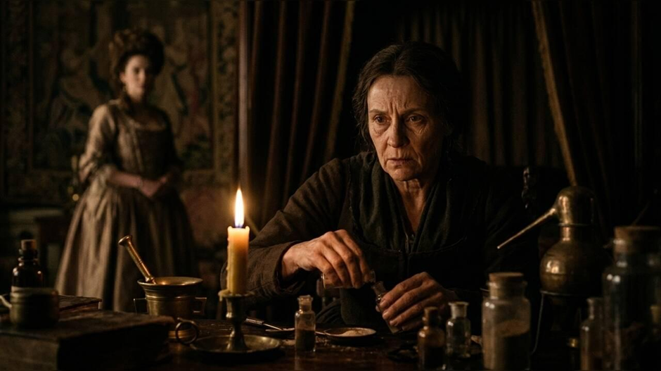
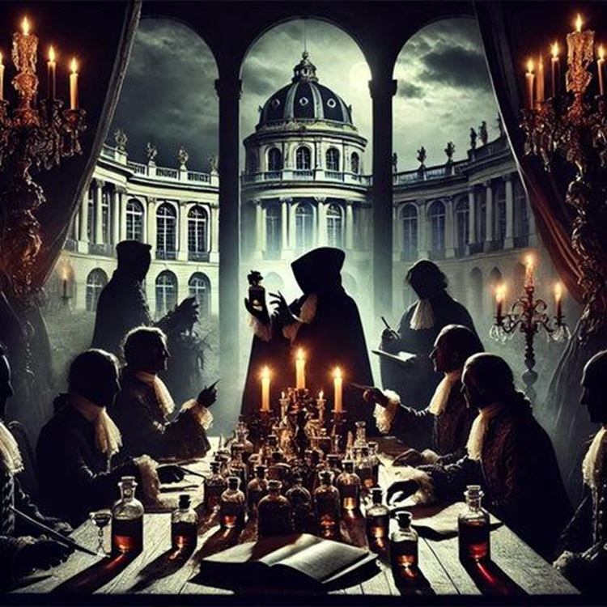
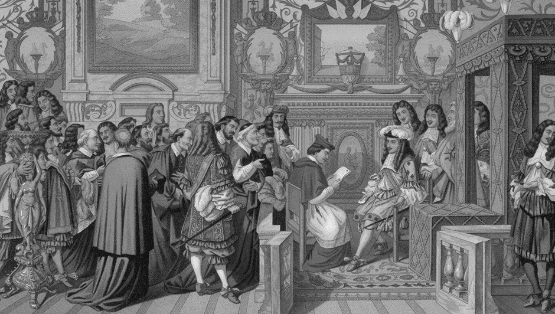
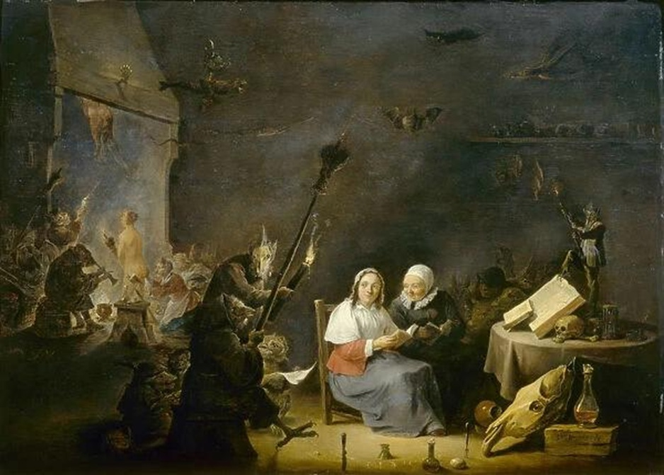
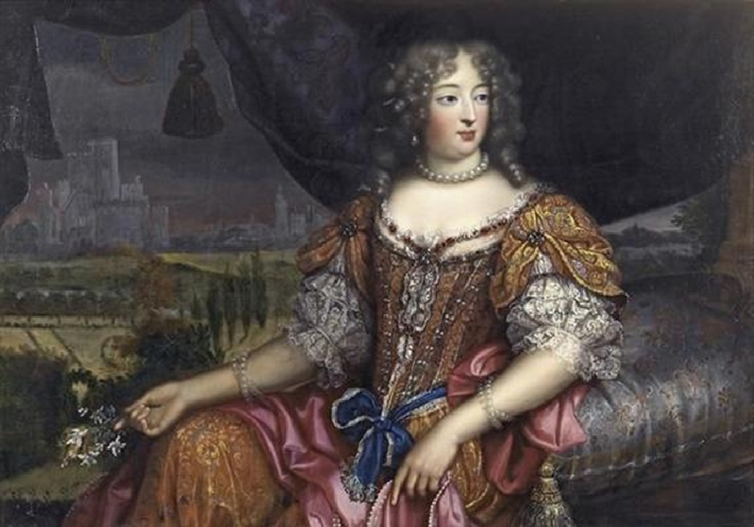
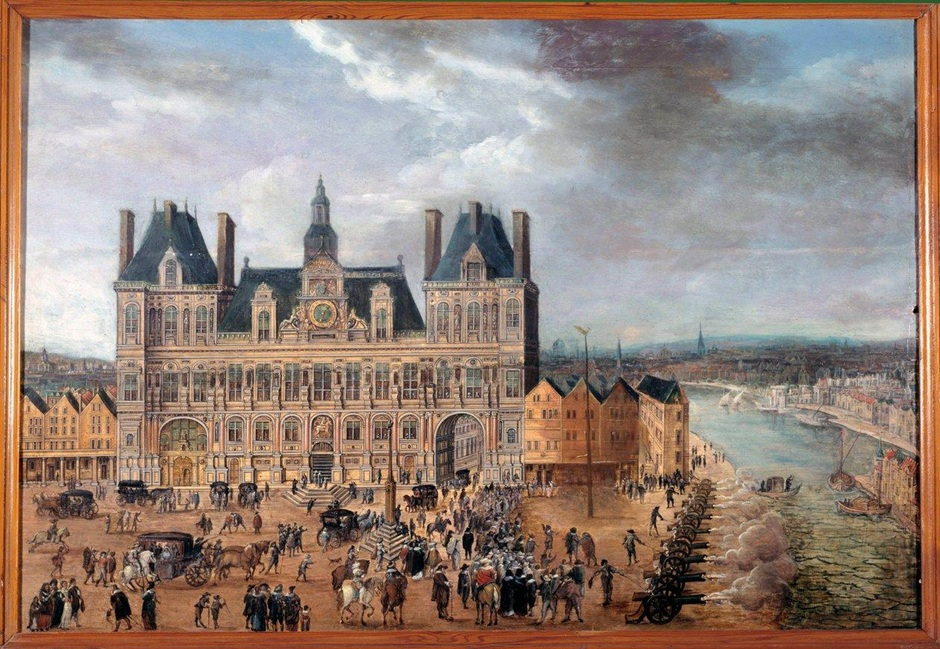
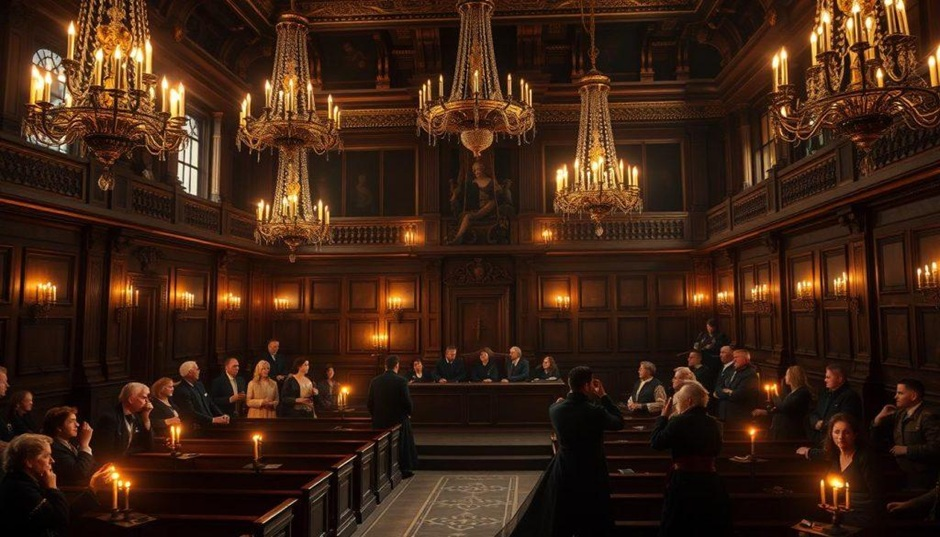
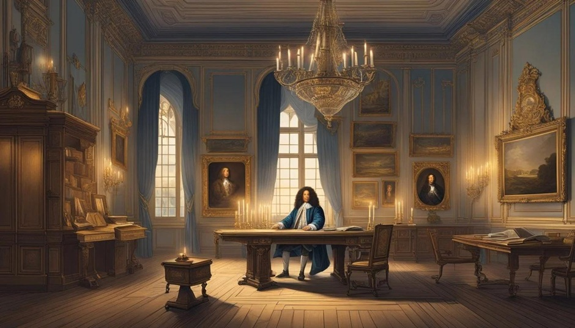

The Affair of the Poisons

Catherine Deshayes, dikenal sebagai La Voisin
La Voisin: perempuan yang mengetahui rahasia Paris
Jika skandal ini memiliki satu tokoh yang paling identik dengan sisi gelap Paris, tokoh itu adalah Catherine Deshayes, atau La Voisin. Ia bukan putri kerajaan. Ia berasal dari lingkungan masyarakat biasa dan dikenal menjalankan praktik ramalan serta layanan yang berkaitan dengan pengobatan tradisional. Seiring waktu, namanya dikaitkan dengan jaringan yang jauh lebih gelap.

Pengkhianatan di balik pintu istana
Pengkhianatan di balik pintu istana.
Pada masa Louis XIV, kehidupan istana Versailles adalah panggung tempat orang-orang bersaing mendapatkan kedudukan. Raja memiliki kekuasaan yang luar biasa. Perhatian darinya dapat meningkatkan pengaruh seseorang, sedangkan hilangnya kepercayaan raja dapat menghancurkan karier seorang bangsawan. Karena itu, ketakutan dan kecemburuan bukanlah sekadar persoalan pribadi. Keduanya dapat berubah menjadi persoalan politik.

Nicolas de La Reynie: polisi yang memasuki dunia rahasia
Nicolas de La Reynie: polisi yang memasuki dunia rahasia
Louis XIV mempercayakan penyelidikan kepada Nicolas de La Reynie, pejabat tinggi kepolisian Paris. Ia menghadapi tugas yang sangat sulit. Ia harus mencari bukti kejahatan, memeriksa saksi, menilai dokumen, dan menyelidiki orang-orang yang mungkin memiliki hubungan dengan istana. Pada tahap ini, sejumlah perempuan yang dituduh terlibat dalam jaringan racun mulai diperiksa. Di antaranya adalah Marie Bosse, yang kesaksiannya membantu mengarahkan penyidik kepada La Voisin. La Voisin ditangkap pada 12 Maret 1679 bersama beberapa orang yang dikaitkan dengan jaringannya.

Ritual rahasia, ramalan, dan tuduhan black mass
Ritual rahasia, ramalan, dan tuduhan black mass
Di antara kesaksian yang muncul dalam penyelidikan, terdapat cerita tentang ritual yang disebut black mass, ramalan, dan upacara yang dianggap melanggar ajaran agama. Dalam Eropa abad ke-17, tuduhan semacam ini memiliki daya hancur yang luar biasa. Seseorang yang dituduh melakukan sihir bukan hanya berisiko kehilangan reputasi, tetapi juga menghadapi hukuman berat. La Voisin dan sejumlah orang yang dikaitkan dengannya dituduh terlibat dalam praktik yang melampaui ramalan biasa. Kesaksian mereka memuat cerita tentang upacara rahasia, dugaan pengorbanan manusia, serta upaya memperoleh kekayaan atau pengaruh melalui praktik terlarang.

Madame de Montespan
Madame de Montespan: nama yang paling berbahaya untuk disebut.
Françoise-Athénaïs de Rochechouart de Mortemart, yang dikenal sebagai Madame de Montespan, adalah salah satu perempuan paling berpengaruh dalam kehidupan pribadi Louis XIV. Ia merupakan kekasih raja dan ibu dari beberapa anak mereka. Montespan bukan perempuan biasa yang kebetulan berada di dekat pusat kekuasaan. Hubungannya dengan raja memberinya posisi penting di lingkungan istana.

Kematian La Voisin
Kematian La Voisin: akhir yang tidak mengakhiri misteri
Pada 22 Februari 1680, La Voisin dieksekusi dengan dibakar di Place de Grève, Paris, berdasarkan putusan atas perkara yang melibatkannya. Bagi banyak orang, kematiannya mungkin tampak seperti akhir yang wajar: seorang perempuan yang dituduh terlibat dalam jaringan racun dan praktik terlarang akhirnya menerima hukuman. Tetapi kematiannya tidak mengakhiri semua pertanyaan.

Ministère de la justice
Ketika pengadilan mulai mengancam istana sendiri
Pengadilan Chambre ardente memeriksa ratusan orang selama penyelidikan yang berlangsung dari 1679 hingga 1682. Menurut catatan Kementerian Kehakiman Prancis, 442 orang diperiksa sebagai terdakwa, 367 surat perintah penangkapan dikeluarkan, dan 218 penangkapan dipertahankan. Angka-angka ini menggambarkan betapa luasnya penyelidikan tersebut. Ministère de la justice.

Louis XIV
Tahun 1709: rahasia yang dibakar oleh Raja Matahari
Lebih dari dua puluh tahun setelah penyelidikan besar itu dimulai, Louis XIV masih menyimpan dokumen-dokumen sensitif yang berkaitan dengan perkara tersebut. Pada 1709, ia membakar sendiri berkas-berkas tuduhan yang disimpannya dalam sebuah kotak tertutup. Tindakan itu menjadi salah satu bagian paling menarik dari sejarah Affair of the Poisons.